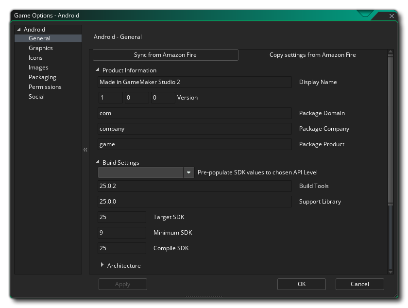
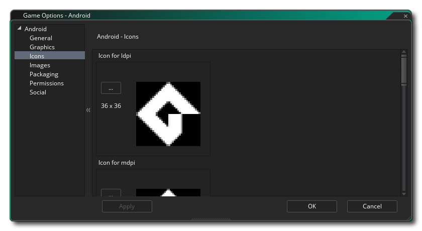
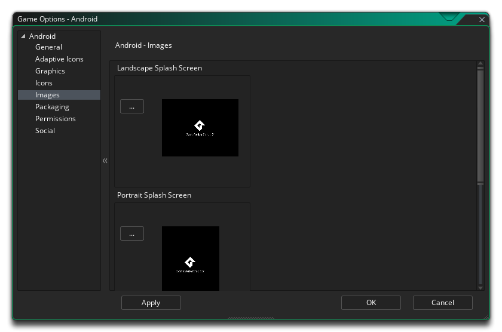
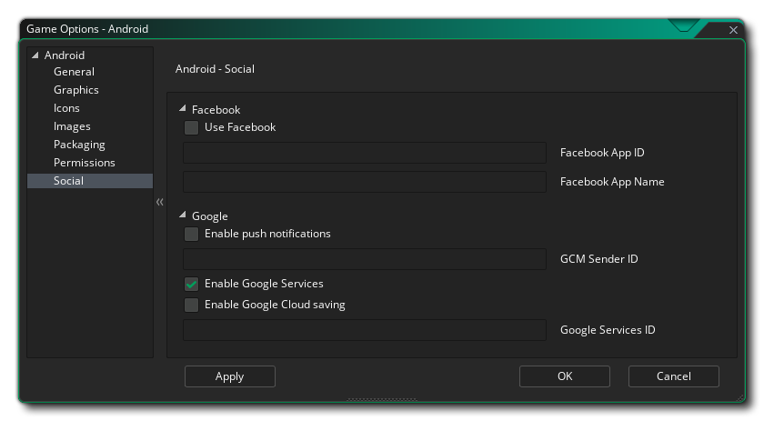

本节概述了可用于控制 Android 游戏项目编译方式的不同选项。不同的部分如下：

全局 部分的第一部分专用于 产品信息 和 构建设置。你应该填写产品信息，其中包括项目 显示名称及它的程序包信息，其中包括域、公司和产品。程序包信息只能由小写字母 a - z 和数字 0 - 9 组成，不能包含符号或其他特殊字符，也不应该包含大写字符。然后，这些详细信息将用于生成格式为 “com.company.myappname” 的程序包 ID。
然后，你需要设置 目标平台 SDK、最小 SDK 和 编译 SDK 版本。编译 SDK 版本是针对项目编译的 API 的版本。这意味着你可以使用该 API 版本中包含的 Android API 功能。如果你尝试使用 API 16 功能（例如）但设置了编译 SDK 15，那么你将收到编译错误。如果你将编译 SDK 设置为16，那么你仍然可以在 API 15 设备（以及所有其他早期版本）上运行该应用程序。
但是，目标平台 SDK 与你的应用程序编译方式或可以使用的 API 无关。目标平台 SDK表示你已经测试了你的应用程序（包括你指定的版本）。这只是为了让 Android 操作系统了解它应该如何在操作系统功能方面处理你的应用程序。出于所有实际目的，大多数应用程序都希望将目标平台 SDK 设置为最新发布的 API 版本（由编译 SDK 设置使用）。这将确保你的应用在最新的 Android 设备上看起来尽可能好。
最小 SDK 版本是运行项目的最低 API 级别。默认情况下，此值设置为 9，一般情况下这很好，但如果要添加扩展，则可能需要更高的最低 API 级别。
全局 的第二部分介绍了要构建的 CPU 体系结构，并提供了以下选项（你可以选择所有这些选项或仅选择你需要的选项，但请注意每个选项将添加到已编译的 apk 的最终大小）：
- 为 ARMV5 构建（此选项默认勾选）
- 为 ARMV7 构建（此选项默认勾选）
- 为 x86 构建
- 为 Mips 构建
设置完成后，你可以选择可以运行游戏的不同 朝向，以获得最佳用户体验。可用的选项有：
- 横向
- 纵向
- 横向 - 翻转
- 纵向 - 翻转
最后，你有以下其他选项：
- 启用蓝牙/ iCade支持： 这将为你的游戏项目添加对蓝牙或 iCade 游戏手柄的支持。该选项默认为“开”。
- 启用 MOGA 游戏手柄支持： 这将启用对 MOGA 控制器的支持。请注意，所有 MOGA 功能都是通过扩展程序访问的，当你第一次选中此选项时，系统将提示你从市场下载并安装 MOGA 扩展程序。该选项默认为关。
- 运行 Lint 代码分析： 当标记此选项时，构建工具将在项目构建时对项目运行 lint 代码分析，在项目编译时提供更深入的错误检查并在输出窗口中显示更多信息（日志文件也将被创建，在输出窗口中编译结束时显示文件的路径）。请注意，并非所有由 lint 分析标记为错误的内容都必然会对你的游戏产生影响，启用此功能可能意味着你的游戏不再编译，即使它已关闭，它也会编译并运行正常。基本上这仅用于调试，默认情况下该选项处于关闭状态。
- 安装位置： 你可以在此设置游戏的默认安装位置。这可以设置为 自动，在这种情况下，游戏将安装到用户在其设备上选择的位置，或者可以设置为 首选外部，它将始终尝试将游戏安装到设备的外部存储。
你也可以在此处设置 Android 睡眠余量（Sleep Margin）。此选项与在特定系统上运行游戏时减少停顿（stutter）有关。基本上，如果你的游戏运行速度超过你的房间速度，GameMaker Studio 2 将在剩余时间内 “休眠”，但此睡眠可能非常不准确，你可能经常睡眠时间超过必要时间，导致你的框架需要更长的时间引起停顿。为了解决这个问题，我们可以在更短的时间内休眠，然后在其余的时间内进行紧密循环以使其更准确 - 尽管进行循环的问题是它会导致 CPU 使用率增加，这反过来可以导致 CPU 温度升高，设备使用更多电量。默认情况下，此值设置为 4，在 99.99％ 的情况下，你可以使用它，但对于低端设备或运行大量后台进程的设备，这可能不是理想的解决方案和值，你可能需要将其设置为 5 到 10。请注意，这是一个特定于设备的配置，并且在你的构建设备上有效但可能不适合其他用户，因此如果有疑问则将其设置为 4。

你可以在此处更改以下有关游戏显示方式的详细信息，并提供以下选项：
- 对像素间颜色进行插值： 打开插值，基本上会使像素 “平滑”。对于清晰的像素图形，它应该是关闭的，但如果你有漂亮的 alpha 混合和平滑的边缘图形，最好打开。默认为关。
- 屏幕颜色深度： 可用于设置渲染为 16 位或 24 位的颜色深度。如果设置为 24 位，这将影响与某些旧设备的兼容性，并且还会增加所需的 ashmem（这是 Android 设备上的共享内存）。
- 设备支持： 此选项将设置是仅支持具有专用 GPU 的设备，还是支持所有设备。 基本上，如果你的游戏有任何高级绘图功能，如透明混合、加性混合、曲面等等，你应该将它限制在那些拥有 GPU 的设备上，否则你可能会面临负面评论和评分不佳的风险，因为旧设备上的图形显示会错误或崩溃。
- 缩放： 你的游戏可以配置为自动缩放绘制画布以在浏览器中保持纵横比，或者你可以选择将其拉伸以适应。拉伸到适合选项不会在浏览器中全屏显示游戏，而是按照游戏的第一个房间的定义，拉伸贴图以适应画布大小。
最后，可以选择设置 纹理页 的大小。默认（和最兼容）大小为 2048 x 2048，但你可以选择 256 x 256 到 4096 x 4096之间的任何位置。还有一个 预览 的按钮，它将为该平台生成纹理页面，然后打开一个窗口，以便你可以看到它们的外观。如果你希望查看纹理页面的结构并防止纹理页面比必要的更大（或更小），这可能非常有用。
注意： 请小心，纹理页面的大小越大，游戏的兼容性就越差。

本部分允许你添加项目对不同商店页面和设备所需的各种图标图像。应将所有图标图像创建为给定适当大小的 24 位 PNG 文件。
值得注意的是，GameMaker Studio 2 有一个 项目图像生成器 工具，可用于自动创建游戏编译到不同目标平台所需的所有图标。 如果使用此工具，则应修改创建的图像以确保它们符合你的要求。

在这里，你可以为最终游戏文件添加启动画面，包括横向和纵向模式，这些模式将在游戏加载到设备上时显示。 此画面应为 24 位 PNG 文件，建议与游戏的第一个房间（或视图）大小相同。 如果你要求在特定时间显示启动画面，则还可以在此处将其设置为 0 到 10 秒（默认时间为 0 表示它仅在资源加载期间显示）。
值得注意的是，GameMaker Studio 2 有一个叫做 项目图像生成器 的工具，可用于自动创建游戏编译到不同目标平台所需的所有图像。 如果使用此工具，则应修改创建的图像以确保它们符合你的要求。

为你的 Android 游戏使用 Google Play 的一个功能是能够授权你的游戏。这意味着你的游戏将由 Google 控制，以便只有通过其市场下载的游戏才能玩游戏，从而避免产品的非法复制品被分发。
要在游戏中激活此功能，你必须先标记 启用谷歌许可证 复选框，然后将 公钥 复制到标有 谷歌许可证公钥 的复选框中。你可以通过转到 Google Play 开发者页面 然后选择要编辑的游戏来找到此许可证。进入游戏配置文件页面后，向下滚动到标题为 “服务和 API” 的部分，你应该找到启用此功能所需的公钥。
一旦激活，如果任何未授权拥有游戏的人试图玩它，它们将显示一个弹出消息框，告知他们在他们的设备上找不到许可证，然后给他们重试的选项并再次测试，或退出游戏。
授权的另一个功能是你的游戏可以使用 APK 扩展。这是一种绕过 Google Play（仅限 oogle Play）规定的 50 MB 最大应用程序大小的方法。它将分为两部分创建你的游戏：一个小 *.apk 文件和一个更大的 *.zip 文件，它将保存你的所有游戏资产，这两个资产都会上传到商店。当用户首次运行游戏时，将下载并解压缩 zip。你可以在 此处 找到此选项的更多详细信息。

在此选项卡中，你可以更改游戏在 Android Manifest 中请求的一些权限。GameMaker Studio 2 将根据需要自动分配权限，但是你可能会发现你需要未正确分配的游戏权限（例如，当你使用自定义扩展时），在这种情况下勾选必要的权限框。 下面的列表概述了可用的列表：
- WRITE_EXTERNAL_STORAGE： 允许你的游戏写入外部存储。
- READ_PHONE_STATE： 允许读取通话状态。
- ACCESS_NETWORK_STATE： 允许你的游戏访问有关网络的信息。
- INTERNET： 允许你的游戏打开网络套接字。
- BLUETOOTH 允许你的游戏连接到配对的蓝牙设备。
- RECORD AUDIO： 允许你的游戏录制麦克风的音频输入。
注意： 如果你不确定是否需要这些，你可能应该在默认情况下取消选中它们，让 GameMaker Studio 2 处理你游戏的权限。

此部分用于在 Android 游戏中启用不同的 社交 功能。 可以选择以下选项：
- Facebook： 如果你需要 Facebook 功能，则需要选中此复选框，然后提供 Facebook 应用 ID 和 Facebook 应用名称。请注意，所有 Facebook 功能都通过扩展程序访问，当你第一次选中 使用 Facebook 框时，系统将提示你从市场下载并安装 Facebook 扩展程序。
- Google - 启用推送通知: 为了让你的游戏使用 推送通知，必须先在此处启用它们，否则它们将无效。iOS 上的本地通知不需要 “GCM 发送者 ID”，但如果你希望创建远程通知，则必须添加它。(?)
- Google - 启用谷歌服务： 如果你要为 Google 应用商店启用成就和排行榜，则需要选中 启用 Google 服务 复选框。选择此选项后，系统将提示你从市场下载并安装相应的扩展程序，然后使用扩展板功能将功能编码到游戏中。请注意，如果你使用 Google Play，则需要将此应用 ID 添加到此标签中才能使服务正常工作（可以从 Google Play 开发者信息中心找到）。
- Google - 启用谷歌云保存: 选中此选项将启用谷歌云保存，并且（如上所述）将提示你从市场下载并安装相关扩展程序。
- Amazon - 启用亚马逊 APIs： 如果你使用的是 Amazon 服务，则需要选中此复选框。选择此选项后，系统将提示你从市场下载并安装相应的扩展程序，并且所有必需的功能都包含在扩展程序包中。